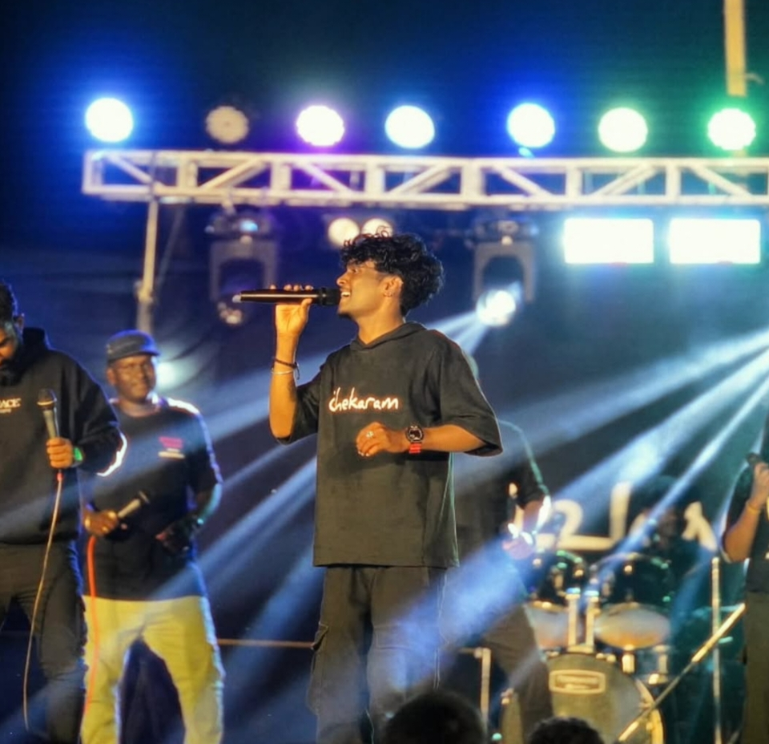
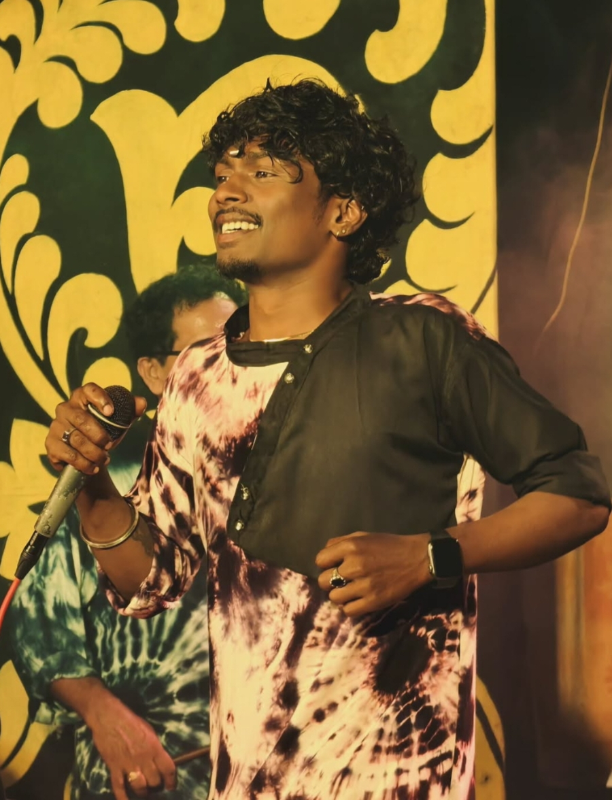
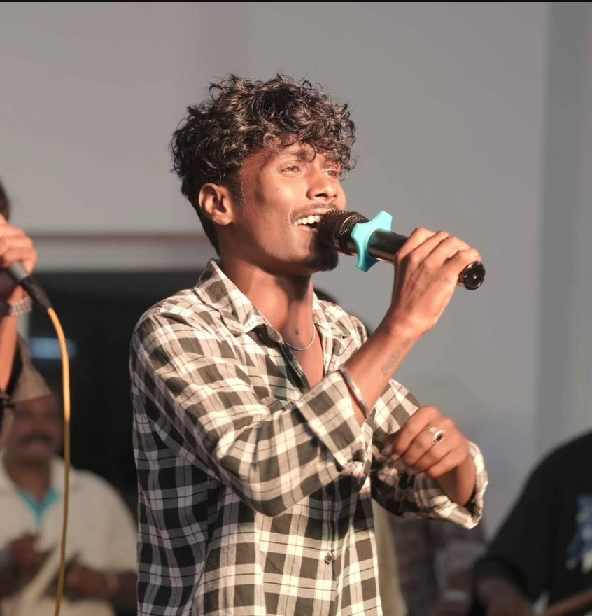
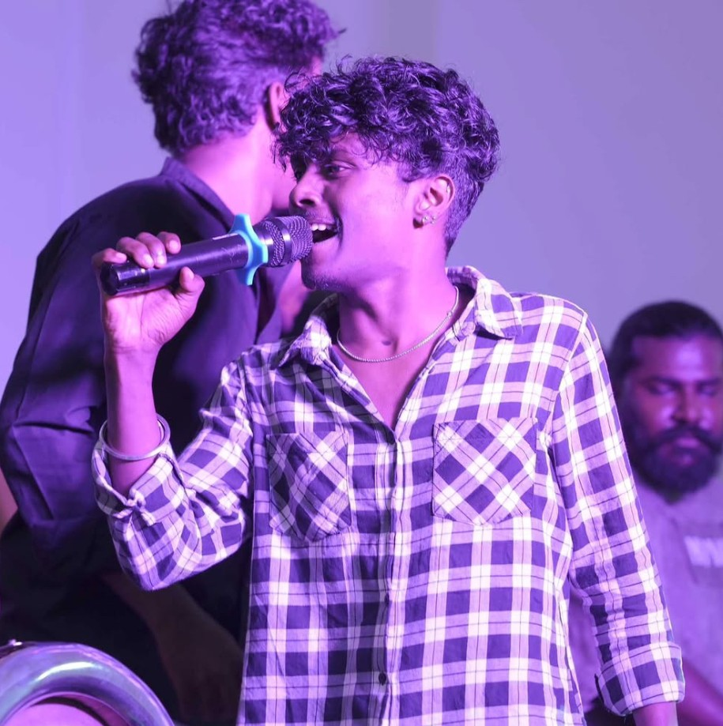

Stage Programs
Engaging folk performances for public events, festivals and stage shows.
Celebrating Kerala's rich folk culture through traditional songs, powerful performances and unforgettable stage experiences.

Dedicated to preserving and celebrating the vibrant traditions of Kerala Nadan Pattu, Subin Das brings the spirit of folk culture to audiences through energetic and memorable performances.
From cultural celebrations to stage programs and special events, each performance is an opportunity to share the beauty of Kerala's musical heritage.
Contact for ProgramsA glimpse into the performances, celebrations and folk-art experiences.




Bringing traditional folk energy to celebrations, cultural events and special occasions.
Engaging folk performances for public events, festivals and stage shows.
Celebrate Kerala's cultural heritage with traditional Nadan Pattu performances for your special occasion.
Planning a cultural event, celebration or stage program? Get in touch to discuss your event and booking details.
Book via WhatsApp